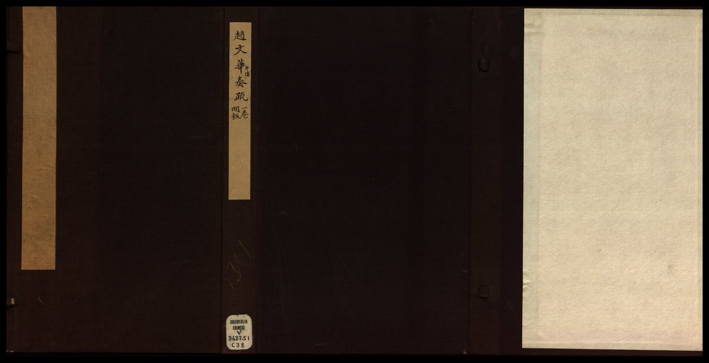

第 5 章
南迁之议的僵局
正月的通政司案上，两份文书时间刻度各异。塘报自西面来，墨迹粗重，写明军情，由兵部经驿站加急递送。奏疏挤在公文行列里，经挂号、检验、抄录，再转呈御前。
塘报写的是行军日程，奏疏写的是政权存续的脚本。两者堆积在同一张书桌上，时间尺却不一致：塘报以日计，奏疏以旬计，甚至以月计。

要理解这种不一致，先得弄明白南迁所指向的那个地方，在明代制度里意味着什么。南京不是一座普通的旧都。明初都城在南京，永乐迁都后降为陪都，却从未废弃。
六部、都察院、翰林院、国子监、五军都督府，北京有的衙门，南京几乎都保留了一套，只是编制减半、事权从简。终明一代，南京吏部管南直隶的官员考核，户部管其钱粮盐课，兵部负责长江中下游防务。这是一个结构完整的备用朝廷，随时可以承接一个从北向南转移的政权中枢。在账面上，这个备用朝廷辖下正是帝国最富庶的地带。
江南的漕粮、盐课、丝织和棉布，经大运河与长江水道汇入国库，是万历以后唯一还算稳定的财赋来源。顺天府库藏见底，南直隶的税册却依然完整。
从纯粹的地理与行政逻辑看，当北方防线瓦解、京师直接暴露于兵锋，将政治中心南移是延续政权的理性选择。这也是支持南迁者反复申说的理由：北京能守固然好；守不住，至少南京还有一个朝廷。
然而，这场讨论从一开始就没有按军事逻辑进行。正月朝堂上的僵局，核心不是迁或不迁，而是由谁提迁、由谁画押。明代中枢的决策主要在内阁与皇帝之间完成。遇到特别重大的事项，亲征、立储、边事、灾异，皇帝召集内阁、部院大臣和科道官员集议，称为廷议。九卿、科道共同参加，各陈己见，最后以皇帝的意见为断。这套制度在创立时用意明确：集思广益，避免一人专断。
但在崇祯十七年的南迁问题上，它却变成了一套精密的推诿装置。推诿的齿轮，嵌在言官传统里。给事中和御史合称科道，职掌监察纠劾。
有明一代，言官因言获罪的案例远少于因言得名的案例，弹劾权被小心翼翼地维护着。弹劾的依据，常常不是具体行为，而是纲常名教——这套规则使所有重大决策都携带道义风险：提出一个方案，等于把一个把柄送到政敌手里。谁提议，谁就要准备为这个提议承担全部后果。
南迁恰好撞在枪口上。儒家政治伦理里，天子与宗庙社稷一体，弃守宗庙意味着放弃祖陵所在，是名教中不可挽回的失德。迁都一旦失败，提议者不仅身败名裂，还会连累家族；即便迁都成功，“弃守”的罪名也会永久刻在履历上。反对的一方只要把“弃社稷”的帽子扣过来，任何关于兵力、路程、钱粮的务实计算，都显得像在替怯懦辩护。
多数研究者总结崇祯一朝政治时，喜欢用“刚愎自用”概括皇帝。这个判断不算错，却遗漏了一个更关键的结构性事实：崇祯帝极为在意自己在大臣眼中的形象，尤其在意他在道德史上的形象。为一封劝谏而流泪的记载，散见于多种史书；而他对大臣的猜忌，也往往起于一句在他看来不够忠敬的言论。
这样一个皇帝遇到南迁议题，反应注定极其别扭——他想走，但绝不肯先开口。史料里留下了一个耐人寻味的轨迹。崇祯十七年正月，他召见阁臣，悲叹道：“吾非亡国之君，汝皆亡国之臣。吾待士亦不薄，今日至此，群臣何无一人相从？”这句话被多种史书引录，记录于王朝面临灭顶之灾时。字面意思是责备群臣不能分忧，放在当时语境里，也是在替自己开脱：不是我不想走，是你们不让我走。
他后来与左都御史李邦华等人复议南迁安排，并要大学士陈演出面主持。陈演推避不从，不久后被罢职。这个细节清楚地暴露了皇帝的策略：他想引导、甚至逼迫大臣成为南迁决议的发起者和执行者，从而在礼法与历史上为自己规避“弃守宗庙”的首要罪名。
朝臣们看穿了这一点。正因为看穿了，廷议才演变成一场冗长的道德表演。
李邦华是支持南迁一方中态度最明确的人。他主张的不是皇帝亲行，而是太子先赴南京监国。这个方案在技术上最稳妥：太子南行，保住皇位继承人的安全，南京也有了名义上的主君；皇帝坐镇北京，守卫宗庙的名分没有丢。
但李邦华的主张踩中了言路的雷区。太子一旦南行，必然在南京形成一个实际的政治中心，这个中心与北京之间的联系，在信息迟滞的乱世里随时可能断裂。质疑者追问的是同一个问题：太子南行，论的是监国，还是另立朝廷？
对崇祯帝而言，这个方案同样难以接受。太子是他唯一的成年继承人。若把太子送往南京、自己留在北京，京城一旦失守，南京的太子自然成为皇位继承的支点。
更早的教训是，在陈演等反对和不情愿负责之下，迁都南京的决心始终未能下定。崇祯帝要的是一份完整的皇权，不是一个被分割的皇权。他需要一个由他掌控的南迁。可他下不了决心说出那个字。于是皇帝与群臣互相观望，谁也不肯先迈步。
这种僵局的政治底色，在崇祯十五年（1642年）的议和案里暴露无遗。当时松山、锦州失守，洪承畴降清，关外局势急转直下。崇祯帝想与清方议和，又怕言路反对，便让兵部尚书陈新甲暗中经办。
密约进行到关键时刻，陈新甲的家仆误将议和条件的抄件当作边报传抄了出去，朝野哗然。皇帝为洗清自己，以“失陷城寨”的罪名将陈新甲下狱处死，议和随之终结。陈新甲的死，教会了每一位在场的朝臣：替皇帝承担政治风险的人，最终会被皇帝当作弃子。没有人愿意成为第二个陈新甲。
李邦华愿意承担风险，但李邦华这样的人在朝堂上极少。多数支持南迁的人只在私下交换意见，一上朝就缄口。于是廷议呈现出一种奇特的景观：公开发言几乎全部反对南迁，私下交谈几乎全部认为北京不可守。两种声音之间隔着一道鸿沟，鸿沟的名字叫政治责任。
反对南迁的言官中，史料记载最明确的是光时亨。他担任兵科给事中，论调听起来确然铿然：固守宗庙是天子的职分，也是臣下的职分，提议迁都就是弃社稷于不顾。事后，崇祯帝曾指责光时亨：“阻朕南遷，本应处斬，姑饒这遭。”
这套话术的厉害之处在于它永远正确。它不需要计算兵力对比，不需要核算仓储粮草，只需要站上道德高地，让一切务实讨论显得不忠不义。光时亨不是一个人。
凡公开表态反对南迁的，几乎全部引用同一套论证框架：有的援引“君死社稷”的古训，有的强调祖陵不可弃，有的担忧迁都诏书一出北方各镇立刻瓦解。这些论证在逻辑上难以反驳——它们根本不讲逻辑，讲的是名分与纲常。而崇祯帝本人就是这套伦理秩序的最终守护者。他无法反驳它，因为反驳等于否定自己存在的根基。
正月已过去旬余，南迁之议仍然没有结论。每隔几日，兵部会送来一份山西方向的塘报，上面的地名越来越靠东。但这些塘报在朝堂上没有获得相应的分量，原因是它们又落进了信息处理的旧轨道：先送兵部，由职方司验明真伪，拟出摘要，上报内阁，再由内阁转呈御前。每道程序都有存在的理由，也都消耗时间。塘报到皇帝手里，往往已是五天甚至七天前的消息。五天，对大顺军的行军速度而言，意味着又向东推进了一百余里。
崇祯帝不是没试过绕开程序。他召见兵部堂官，直接问前方军情。得到的答复往往是“尚未接到最新塘报”或“据报贼势猖獗，已加严备”。这些话等于什么都没说。
他无法离开紫禁城去亲眼确认，他的整个信息供应只有驿路。而这条驿路系统，正因前些年的驿站裁撤而运转失灵。裁驿站省下的银两，与断掉的帝国神经相比，实在算不上一笔划算的账。
军饷问题则锁死了南迁的技术前提。迁都不是移动一支仪仗队。中枢、六部、锦衣卫、京营部队，连同家眷和文书档案，要沿运河南下，需要沿途的秩序、足用的现银和一支能压住阵脚的军队。当时的账目是：京营兵册上的名额与实有人数严重不符，大量空缺被将领冒领空饷，真正能列阵的不足三分之一。太仓存银，据当时官员盘点，不过四万余两，连京营一个月的月饷都不够。而朝廷每年在“三饷”名目下征收的辽饷、剿饷、练饷，总额高达两千余万两，这些银两在中枢账册上记归某军门，到了地方大半变成一纸欠条。欠饷最久的边军长达数月乃至两年，士兵开城迎贼已不是新闻。
于是出现了崇祯十七年正月最讽刺的一幕：从技术条件看，南迁需要钱和兵，而钱和兵恰好都不足；唯一能让钱和兵充足起来的办法，是迁到南京去重新整顿财赋甲兵。
这是一个两头解不开的死结。主张南迁的人看到的是江南还在、税册还在，保住这两样就有翻本的可能；反对南迁的人看到的是北京一弃、人心即散，天下人会怎么看？一个被农民军赶出京师的皇帝，凭什么征调江南的钱粮？
争论后期，支持者与反对者已经不在讨论同一个问题。支持者讨论政权的延续，反对者讨论皇权的体面。崇祯帝在两者之间摇摆。正月下旬，有过一次最接近行动的方案——李邦华联合几位同僚，提出太子先赴南京，由司礼监太监高起潜护送，沿途各镇派兵接应；皇帝留守北京，一旦城破，可从东华门出逃，经通州登船南行。这个方案的优点是没有把皇帝离京摆在明面。
缺点是需要兵部、司礼监、沿途军镇三方协同。而此时的山海关总兵、宣大总督、蓟州总兵各怀心思，没有一人愿意从本已空虚的防区抽调兵力。各镇上疏的用词几乎一样：所部欠饷数月，若再抽调，防区即刻崩溃。这是一条死路，但没有人愿意把“死路”两个字说出口。
因为说出口就等于承认北京不可守，承认北京不可守就等于主张南迁，主张南迁就等于把自己放到光时亨的对立面上。于是每一次廷议的流程几乎相同：有人提出方案，有人以固守社稷反驳，皇帝沉默，群臣随之沉默，最后以“再议”收场。再议。这个制度性循环没有产出任何决定，唯一的产出是时间。
时间恰好是崇祯十七年最稀缺的东西。那段时间里，崇祯帝对城防的过问频率明显提高了。他开始问通州方向的漕船够不够用，问京营各门守卒实有人数，问北京城若遇围困，粮能支几日。这些询问没有一条以谕旨下达，朝臣却都听得懂弦外之音。但依然没人接茬。每一个被单独召见的大臣，走出宫门时面色凝重，回到衙署后闭口不提召对内容。知道得越多，越不敢开口。
从制度演变看，这套决策系统的极限早已在前几年被反复验证。崇祯十五年陈新甲议和案是一个预演：皇帝想做事，又不肯担名，把经办人推到前台，事败后杀人灭口。崇祯十六年李自成破潼关后，也有人提议早作南迁之备，话音未落，即刻遭到驳斥。
所有尝试都被同一个逻辑扼住：没人敢碰“弃守”二字。这不是某一个昏君或某一个奸臣的过错，而是整个决策结构在压力下的必然表现——一个以皇权为唯一圆心、以伦理为共同语言、以公文为唯一信息通道的系统，在正常运转时效率不高但能维持；一旦外部威胁与内部崩溃同时到来，它便丧失了自我修正的能力。
皇帝等大臣提出方案，大臣等皇帝下达指示，府库等赋税收齐，军队等饷银到位。各方都在等。而李自成不等待。他从正月在西安称王建大顺、定年号永昌开始，行军日程已精确写在塘报上。到了二月间，山西的塘报开始逐城失守。三月一日，大同失陷；四日，崇祯帝仓促任吴三桂为平西伯，飞檄入卫；六日，宣府陷落；十三日，居庸关失守；十五日，兵部给事中光时亨代表的反对力量，已无法阻挡“圣驾南巡，征兵亲讨”成为名义，但诸臣仍以“皇帝不在则群臣为替死鬼”为由阻拦。
同一时间，保定巡抚徐标入京觐见，向皇帝描述他从江淮所见的景象：“臣从江淮而来，数千里地内荡然一空，即使有城池的地方，也仅存四周围墙，一眼望去都是杂草丛生，听不见鸡鸣狗叫。看不见一个耕田种地之人，像这样陛下将怎么治理天下呢？”崇祯帝听后，潸然泪下，叹息不止。这时崇祯帝做了最后一件有记录的事：召见光时亨，当面指责他当初力阻南迁是误国。史书记载，光时亨伏地痛哭，无言以对。但这已经太晚了。
三月初的北京，城外已能望见大顺军的旗帜；城南的官道是否还在明军手里，运河是否还能通行，答案都已是否定的。曾经被反复讨论的方案，如今连拿出来谈的资格都没有了。
三月十九日黎明，崇祯帝登上煤山，在一株老歪脖子树上自缢，留有亲笔遗诏（亦有说法指遗诏置于乾清宫玉几）。南迁之议在帝国的正式档案里始终没有成为一次正式决策。
它只存在于廷议的口头交锋里，存在于皇帝的召对与沉默之间，存在于臣子们语焉不详的记述里。因为没有形成正式文件，后世找不到一份盖有国玺的迁都诏书，也找不到一份批准南迁的廷议记录。能找到的只有那些零散的奏疏、含混的记载和无数个被“再议”二字吞掉的早晨。
煤山北望，是明朝历代皇帝祭祀祖先的太庙。崇祯帝自缢的地方，能望见太庙的屋脊。那一线距离，正好是一座王朝从存在到虚无的全部长度。
而关于南迁，还有一个细节值得记住：从正月初到三月十九日，大顺军从西安到北京，走了约八十天。同一段时间里，明朝的廷议发起的次数，史料记载完整可考的不超过十次。
其中没有任何一次发生在大顺军渡过黄河以后。当李自成的军队踏过山西与北直隶的分界线时，北京城里关于往哪走的讨论已经彻底静止了。
唯一还在动的，是塘报上一个个继续向东的地名——它们挡在决策与刀锋之间，每一封都比前一天晚到。